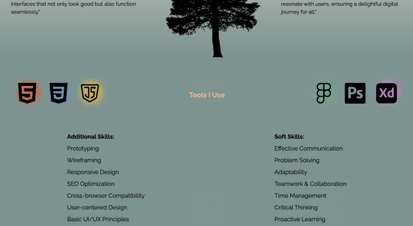

Design
I conducted some research on colors that evoke a sense of relaxation,
tropical vibes, and minimalism. This led me to the following choices: (colors are presented).

EBE2D6
363633
779490
F2B886
Regarding typography, I also undertook research, with the assistance of
ChatGPT, to find simple yet modern fonts that exude a clean and professional
appearance. This research directed me to these two font types:
Lato
For h1, h2, h3, h4
Header
Raleway
For text and sections
I chose a design that incorporates forests and landscapes because
I have a passion for nature and hiking. Integrating an element
of my own interests and passions seemed fundamental,
and besides, natural landscapes provide a visually pleasing
and serene aesthetic. Thus, I decided to showcase them on my page.
Some Iterations I Made
Icons with colors
Icons without colors
One iteration involved the visual treatment of the technology icons I use.
In an initial design version, these icons were colorful to vividly highlight
each technology. However, reflecting on the overall cohesion of the design and
the color scheme of my page, which predominantly used black icons, I decided to
unify the aesthetic by making all icons adhere to this black palette.
But I didn’t want to lose the visual impact that the colorful icons brought,
so I devised a solution using CSS: I added a flickering
light effect behind each icon. This maintained the cohesive black color
of the icons while also adding a dynamic and visually appealing
effect that catches the viewer's eye. I’ve attached a screenshot
to illustrate this effect in action.
The result
Development
The development process was a deliberate experience, honing in on
selecting tools and technologies that were not only suitable for the project
but also aligned with my skills and requirements. I chose Figma in the design phase due to its
intuitive user interface and robust prototyping functionalities, which effectively allowed me to visualize
the end product and make real-time adjustments in the early stages of the project.
Moving the design into code, I opted for HTML, CSS, and JavaScript for
their simplicity and efficiency. HTML and CSS are pillars in constructing any web structure
and style, providing the solid and customizable foundation I required. JavaScript,
on the other hand, offered me the ability to add interactivity and dynamism
to the page without overburdening or unnecessarily complicating it. The combination of
these technologies enabled me to build a website that was not only visually
appealing but also functional and user-friendly.
Problems and solutions
Despite this being my first project, I didn't encounter numerous challenges with HTML
or CSS; however, certain details did arise that demanded exploration beyond documentation
and Google, wherein ChatGPT became a valuable tool in problem-solving. One particular
challenge was centering a 'div' containing other internal 'divs,' maintaining a specific order
when implementing responsiveness. The solution was found in the code (code shown)
where simply using 'align-items: end;' achieved the desired effect. At times,
what seems to be a straightforward task can become complicated depending on one's
familiarity with the issue; fortunately, I was able to overcome it.
Another challenge presented itself when attempting to create a light effect behind
my icons. The issue was that the color was obscuring the image, or nothing was
visible at all. Again, I turned to ChatGPT and some video tutorials, discovering that
utilizing multiple 'divs' could create the desired effect (code shown).
These are just a few examples. Lastly, in JavaScript, while dealing with the implementation
of responsive design in code, I encountered the inability to make the menu close
and revert to its normal state upon clicking a section. Once again, I turned to ChatGPT and
reviewed documentation about functions. I realized that it's not always necessary to
consolidate everything into a single function. In this case, two functions were utilized:
one that opens the menu and another that closes it, and, together with CSS, the desired effect
was achieved, but there were other details to address.
The key is that, when faced with a problem, it's crucial to seek a solution,
not only by copying but understanding, to avoid future stagnations.
I realized that observing others' work is vital, as many might have faced
similar challenges, and exploring their solutions allows seeing various
ways to tackle and overcome obstacles.
Thank You for Reading All the Way Here
Your time is valuable, and I’m grateful that you’ve spent it
getting to know more about my work and process. If you
find yourself inspired by what you've read and seen, I would
love to explore how we might work together to bring your
own ideas and projects to life.